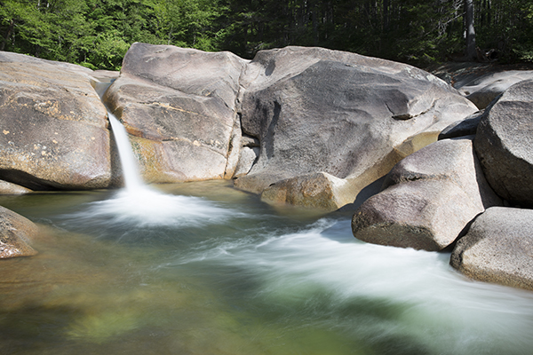
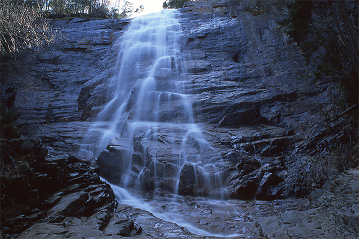
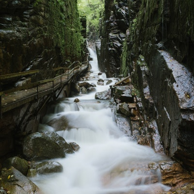

New hampshire has lots of waterfalls all over the state.
Some are easy to get to, while others are several miles in. If you are intersted in doing some
hikes around NH, there is some additional information over at
this website.
Franconia Falls

Franconia Falls is located in the Pemi, right smack in the middle of the White Mountains.
Arethusa Falls

Arethusa Falls is located near Crawford Notch, just south of Mount Washington.
The Flume

The Flume is a gorge with a series of cascades located in Franconia Notch. It has a winding path built to allow visitors to walk through it.